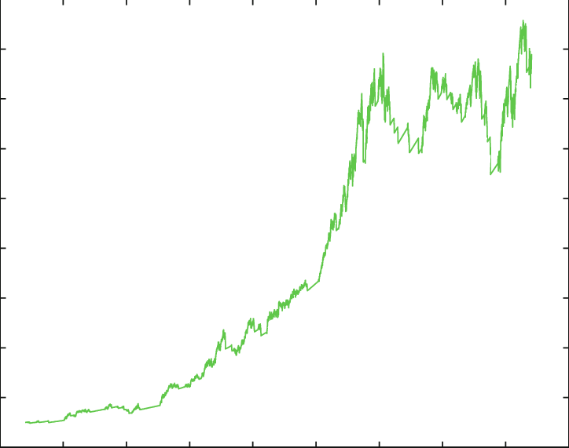
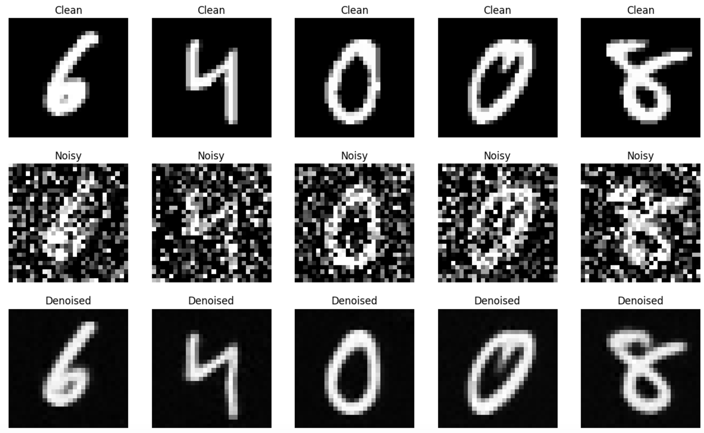
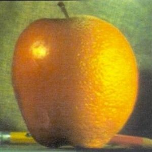

Selected Projects

Equity Strategy Backtest
Simulated long-short portfolios based on ML signals. Evaluated with Sharpe, Sortino, and Calmar ratios in a production-ready backtesting pipeline.

Earnings Sentiment & Return Forecasting
Used NLP and transformer embeddings to extract sentiment from earnings calls and predict near-term returns using regression models.
Financial Fraud Detection
Developed a real-time ensemble ML pipeline with 92.3% recall and 0.983 AUC, designed for enterprise-scale risk detection and compliance.
F1 Tire Degradation Modeling
Regression model with SHAP-based interpretability to predict tire performance drop-off using telemetry data from Formula 1 races.
MLB Pitch Outcome Prediction
Two-tier gradient boosting classifier trained on Statcast data to predict pitch outcomes with interpretable feature importance.
Neural Radiance Fields (NeRF)
Trained volumetric rendering models to synthesize new 3D views from 2D images using positional encoding and MLPs.

Diffusion Modeling
Implemented a Denoising Diffusion Probabilistic Model (DDPM) to generate high-quality images with custom beta schedules.

Face Morphing
Used Delaunay triangulation, affine warping, and image blending to morph between facial landmarks and generate caricatures.
Colorizing Prokudin-Gorskii
Reconstructed color photos from century-old negatives using SSD alignment, image pyramids, and edge detection.

Filters and Frequencies
Created hybrid images by constructing and manipulating Laplacian and Gaussian stacks across spatial frequency bands.